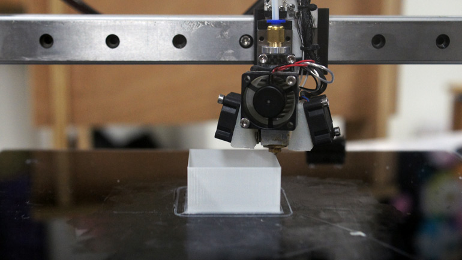

XINFAB SERVICE

Business
From startups to non profit organizations to big commercial companies we offer services like
-
production of prototypes,
-
product design,
- 3d printer maintenance,
-
workshops for learning and team building purposes.
Education
For educational partnership we offer workshops, varying from half day workshops to long term workshops. With the focuss on educating students about
- creativity,
- technology,
- innovation and
- production methods like 3d printing, laser cutting and cnc milling.
Individuals
For individuals we offer our space and machines to work on private or commercial projects.
Also individuals can sign up for workshops te learn more about the machines that we have or just for fun!
Workshops
We organize workshop by interest of the public, so if you are interested in a workshop or want be kept up to date please sent us an email or follow our official wechat account "xin_fab". Feel free to sent us suggestions for workshop.
Software
Illustrator / Corel draw for Lasercutter
Solidworks for CNC and 3D printing
Sketchup
for 3d printing
Machines
3D printing - Cura/Repetier
Lasercutting
CNC
Sewing machine
Objects
Drone
3D printing
Pm 2.5 meter